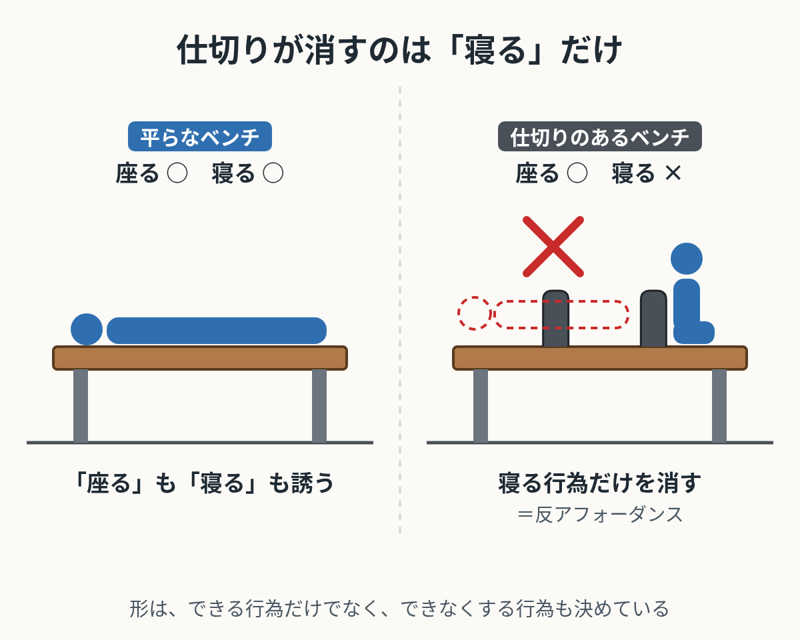
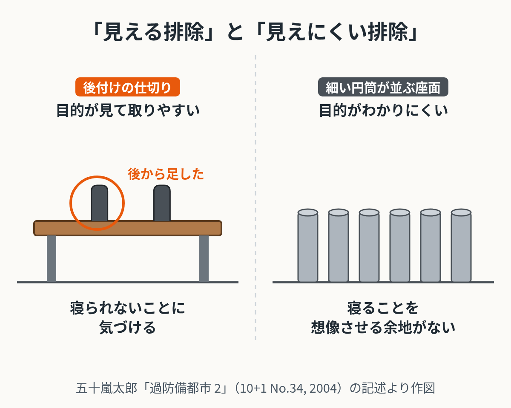

第8回 公共空間
仕切りのあるベンチ（座れるけれど、横になれない）


何がどう行為を誘っているか
駅や公園のベンチに、座面を区切る肘掛けや仕切りが付いているのを見かけます。仕切りのあいだは、ひとり分の幅です。腰をおろすことは誘いますが、横になることはできません。
建築史家の五十嵐太郎さんは2004年の論考で、渋谷・上野・吉祥寺のベンチの真ん中に肘掛けが後から付け足され、その上で寝る動作ができなくなっていると書いています。平らで長いベンチは、もともと「座る」も「寝る」も誘っていました。仕切りは、そのうち「寝る」だけを消す部品です。
ノーマンは、行為を妨げる性質を「反アフォーダンス（anti-affordance）」と呼びました。ガラスは向こうを見せるけれど、通り抜けはさせない、という例です。ベンチの仕切りは、横になることへの反アフォーダンスを、わざと形にしたものといえます。
惜しい例・悪い例との対比
五十嵐さんは、後から付けた仕切りや突起のような装置は「排除」の目的が見て取りやすい一方、最初からデザインに組み込むとわかりにくくなる、と指摘しています。例に挙げたのは、細い円筒形が並ぶ池袋西口公園のベンチです。腰をおくようにはアフォードされているが、寝ることを想像させる余地がない、と書いています。
ロンドンでは2014年、路上で眠る人を遠ざけるために地面に埋めた金属の突起（いわゆる「アンチホームレス・スパイク」）が大きな議論になりました。ペティ（Petty, 2016）は、こうした「敵対的建築（hostile architecture）」を、都市の安全管理が強まる流れの中で論じています。反アフォーダンスは、誰の、どの行為を消しているのかが問われるデザインでもあります。
使いどころのひとこと
形は「何ができるか」だけでなく、「何をできなくするか」も決めています。授業でアフォーダンスを説明するとき、平らなベンチと仕切りのあるベンチを並べると、同じ「座れる」の裏で「寝られる」が消えていることが一目で伝わります。研究サイトやフォームでも、入力欄を減らす・ボタンを隠すといった「させない設計」が、誰の、どの行為を止めているかを一度書き出してみると、意図しない排除に気づけます。
出典
- 五十嵐太郎 (2004). 過防備都市 2──戦場としてのストリート. 10+1, No.34（特集＝街路）. INAX出版.
- Norman, D. A. (2013). The Design of Everyday Things: Revised and Expanded Edition. Basic Books.（第1章でガラスを例に anti-affordance を説明）
- Petty, J. (2016). The London spikes controversy: Homelessness, urban securitisation and the question of ‘hostile architecture’. International Journal for Crime, Justice and Social Democracy, 5(1), 67–81.